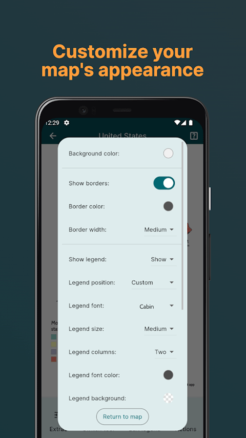
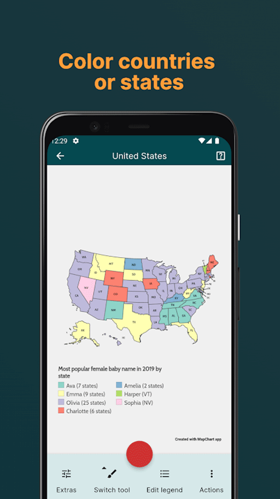

每周一张销售区域图：我把 MapChart 嵌进 Excel 到邮件的全自动链路
以前每周要花半小时手动涂销售区域地图，现在一条链跑下来，从 Excel 数据到带配色、图例的成品图进邮件正文，只需要八分钟。这篇讲我怎么把 MapChart 当生产力工具链的一环接进日常。
我每周要做的那件事
做区域销售的人大概都有这个活：每周五下午，把本周各区域的销售额汇总成一张"什么颜色对应什么档次"的地图，贴进周末汇报邮件里发给团队。这件事听起来小，但以前我得三步手动拼起来，每次半小时起。
旧流程是这样的：先从 Excel 里把各区域的销售额数字抠出来 → 打开某个在线地图工具，对着区域名单一格一格手动点颜色 → 截图、裁边、加图例说明 → 贴进邮件正文。卡的地方不止一个：手动涂色慢是一方面，配色总是随心情选，出来的图有时同事反馈"看不太清梯度"；图例更是每次要手动敲字，改两版配色就得重写两次；导出的图有时候在邮件里变形，还要截图重传。
后来有人甩给我 MapChart 官网，说"你试试这个，能省一半时间"。一开始我只当成一个更好用的地图涂色 App，但用了两周才发现，它真正的价值不是"手动涂色更快"，而是它能嵌进我已有的数据链路里——从 Excel 数据直接跑到底色+图例+配色成品，中间那堆手动步骤基本被干掉了。
新流程：Excel → MapChart → 邮件，一条链串起来
现在每周五的流程变成了这样：
第一步永远在 Excel 里完成。我已经把区域名称列和数字列的格式固定了——区域列的命名必须和 MapChart 底图里的区域名逐字对得上（这个坑踩过一次就记住了），数字列就是本周的销售额，不再需要额外整理。
第二步才打开 MapChart，App 从官方下载拿的。选好底图（我固定用中国单国详细那张，省得每次挑），然后点那个我之前完全没注意到的入口：Actions 菜单里的"从 Excel 数据自动填色"。这一步是整个工作流的核心——它直接读我复制进去的两列数据，自动把每个区域按数字大小映射到颜色梯度里，连图例一起生成。

第三步是调配色和外观。MapChart 自带了几套调色板，我现在固定用"商务深蓝"那套——深色边框、渐变填充，比我以前瞎选的红绿配专业多了。如果本周的区域数字差距特别大，我会把梯度调一下，让中档区间的颜色区分更明显，同事一眼能看出来。
第四步导出，直接发邮件。导出 PNG 后 MapChart 有两个选择：分享到系统应用，或者直接保存到本地。我现在的习惯是先本地保存一份当归档备份，然后直接用系统分享面板贴进邮件正文——刚好 1400px 宽度，邮件里不变形。如果赶时间，分享面板里还能直接发到工作群或微信，省了存文件那一步。

整个流程从打开 Excel 到邮件发出去，平均八分钟。旧流程里那两次手动复制（数字 → 地图、颜色梯度 → 图例），现在全没了。
最容易断链的两个环节怎么处理
这条链我跑了快两个月，踩过两个最容易让流程断掉的坑。
第一个是 Excel 区域名和底图区域名对不上。 MapChart 里的中国底图用的是标准行政区划名称，我一开始 Excel 里写的"内蒙"和"内蒙古自治区"就卡住了——自动填色直接跳过不匹配的区域，地图上就缺几块空白。解决办法很简单：把 Excel 的区域名列做成固定模板，每次直接复制粘贴，不再手动打字。这样 MapChart 读进去一次就能过，再也没出现过缺口。
第二个是配色别用默认那套。 MapChart 打开时的默认配色是个红绿渐变，在邮件里对比度太差，有两次同事直接说"看不太清"。我后来把固定配色存进了"我的调色板"功能里，这个功能的完整参数和可用色调我第一次翻了一下MapChart 文档才摸透，每次打开直接选，不再随机选。MapChart 免费版的调色板能存 25 个，Premium 版无限，但对我来说存一套够用的就行。
还有一个小习惯：我现在每次涂到一半会按 Save config 存一份快照。MapChart 免费版能存 25 份，够我每周留几份不同配色的版本做归档参考。上次手机突然没电重启，回来打开还能接着上次的状态继续，没丢东西。

省了多少事，什么时候不划算
说点具体的。旧流程每次三十分钟，现在八分钟，一周省二十二分钟，一个月就是快两个半小时。这些时间以前花在"手动点颜色格子"和"调整图例文字"上，现在花在"看一眼配色合不合适"和"检查有没有遗漏区域"上——本质是从机械劳动变成了判断决策，累是累在眼睛不是累在手指。
但这条链也有不划算的场景。比如我做过一次全球市场潜力评估，用的是世界 Robinson 投影底图，区域名是英文名，我得先把 Excel 里的中文区域名翻译成英文才能自动填色——翻译花的时间还不如手动涂。这时候我会跳过自动填色，退回到手动模式，但配色和图例还是用 MapChart 带，省一半是一半。
另外，如果 MapChart 底图里根本没有我要的区域（比如某个行业自定义的销售分区），那这套流程也走不通——自动填色根本找不到对应的底图块。这种情况目前只能手动涂，但有一次我给 MapChart 发了反馈，居然真的回了邮件，说他们的历史地图库支持社区贡献底图，说不定以后能自己上传分区底图。
我现在怎么管理地图的版本
还有个细节值得说：我现在把每周生成的配置快照也用 MapChart 里的"Export config to file"功能导出成 txt 文件，存进公司的云盘。这样以后要翻去年的同期数据、或者想把某张旧图改配色重发，直接导入配置就能继续编辑，不用从 Excel 重新走一遍。配置文件是纯文本格式，比我自己存一堆图片文件方便多了——体积小，能在任何设备上导入，甚至 mapchart.net 网页版也能导入继续。

这套流程跑下来我最大的感受是：工具真正省时间的地方，从来不是"让某一步更快"，而是"把原本断开的步骤接上"。MapChart 在我这里不是"一个涂色 App"，而是 Excel 数据和成品图之间的那个衔接点——它吞进已经整理好的数据，吐出来直接能用的图片，中间我只需要做配色判断。如果哪天我换销售区域、换数据源，这条链只要改底图和 Excel 模板，其他环节原样不动。
对了，我平时查的那些使用说明和配置文件示例，作者在 GitHub 维护主仓库，国内访问不方便的朋友可以从 Gitee 或 GitCode 镜像拿，三份内容保持同步。